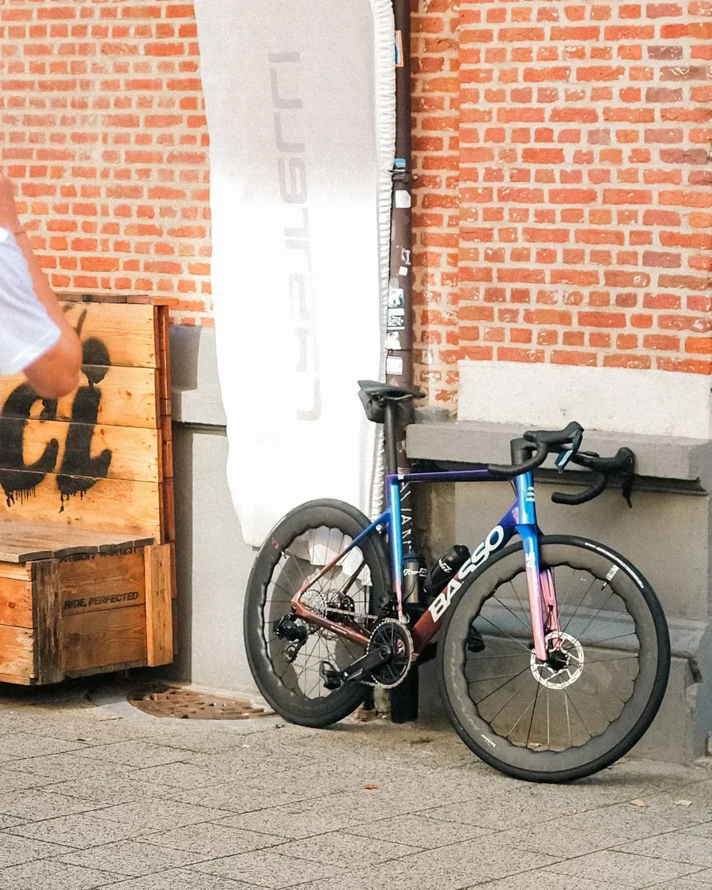
Race · Basso SV
Viola Galaxy
SRAM Force en Fulcrum Sharq 57. Snel, comfortabel en Italiaans tot in de lak. Geniet ervan, Joeri!
Race, gravel en mountainbike bij Jef en Sofie, in de Riemstraat. Van een band die er in vijf minuten weer op ligt tot een droomfiets die we samen met jou opbouwen, stukje per stukje.
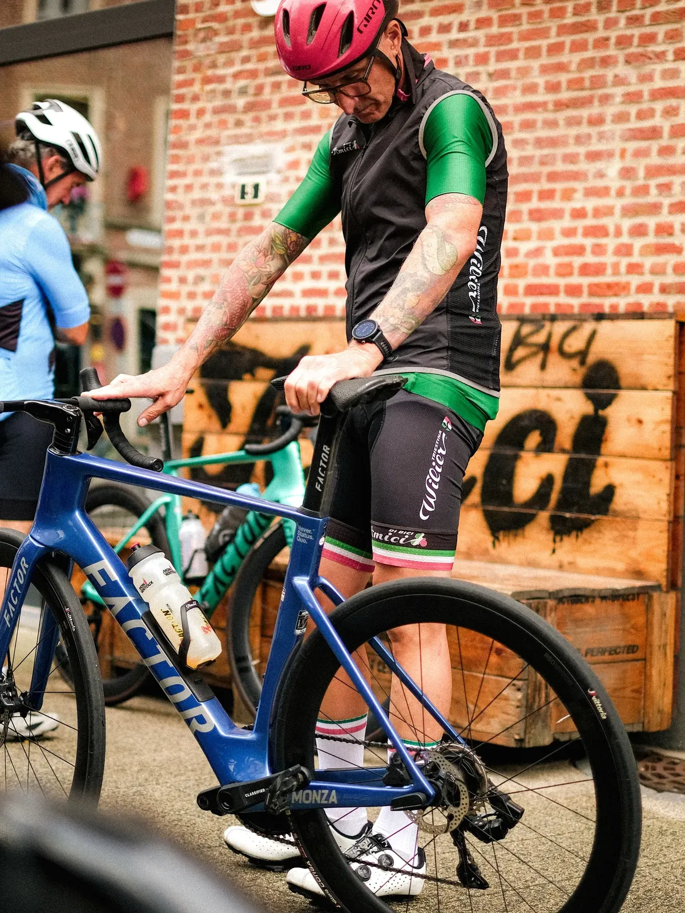
Pinarello, Basso, Wilier en Factor. Afgemonteerd zoals jij hem wil, met de onderdelen die jij kiest.
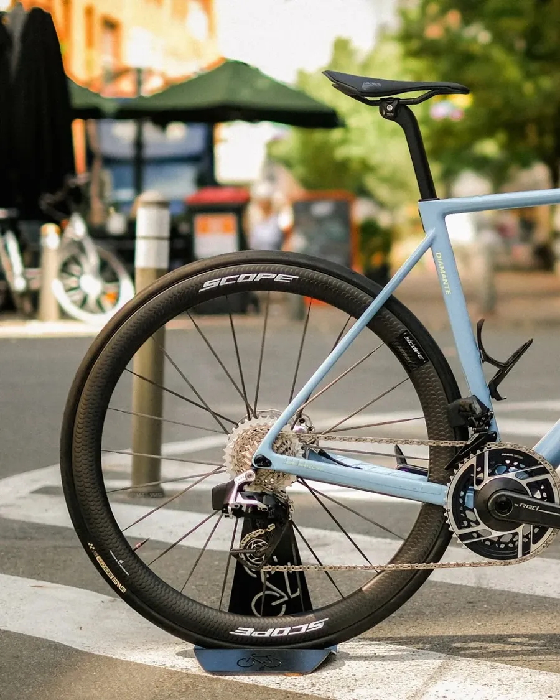
Een vedergewicht, afgemonteerd met SRAM RED en Scope Artech 4. Op de weegschaal: amper 6,2 kilo.
Had je hem liever sub 6 kilo? Zeker. Dan bekijken we samen de mogelijkheden.

SRAM Force en Fulcrum Sharq 57. Snel, comfortabel en Italiaans tot in de lak. Geniet ervan, Joeri!
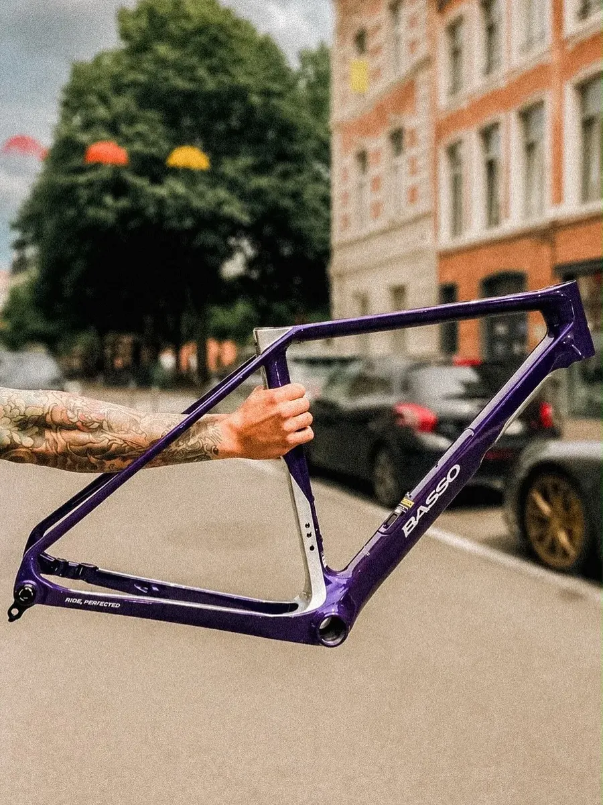
Voor de grindwegen en alles daartussen. No words needed, schreven we erbij.
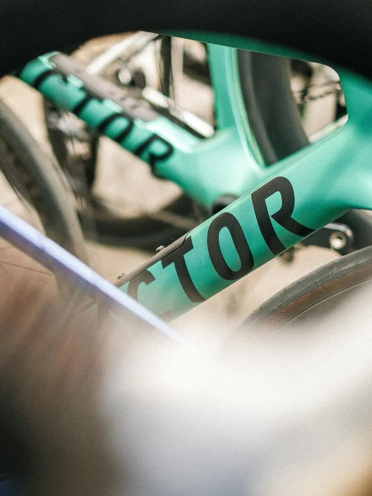
Ons testevent gemist? De Factors blijven gewoon in de winkel staan. Tot in de shop.
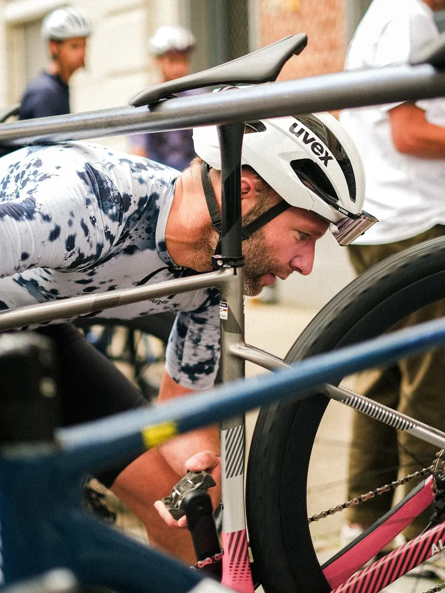
Voor onderhoud heb je geen afspraak nodig. Breng je fiets gewoon proper binnen, dan kunnen we meteen aan de slag. Pech onderweg? Kom langs, ook als het druk is.
Van een lekke band tot een volledige revisie. Race, gravel, mountainbike: alles gaat bij ons de werkplaats in.
Koop je een nieuwe fiets, dan krijg je er een Bikefit Light bij. Zo zit je vanaf de eerste rit goed.
Een fiets via je werkgever, of eerst eens proberen met een huurfiets. Vraag ons gerust hoe het werkt.
Sofie was professioneel triatlete. Wat je eet en hoe je traint, daar geeft ze je persoonlijk advies over.
En dat nemen we letterlijk. Social rides, testevents, een eigen wielerclub en zelfs een ride voor singles. Wie hier een fiets koopt, rijdt zelden alleen.
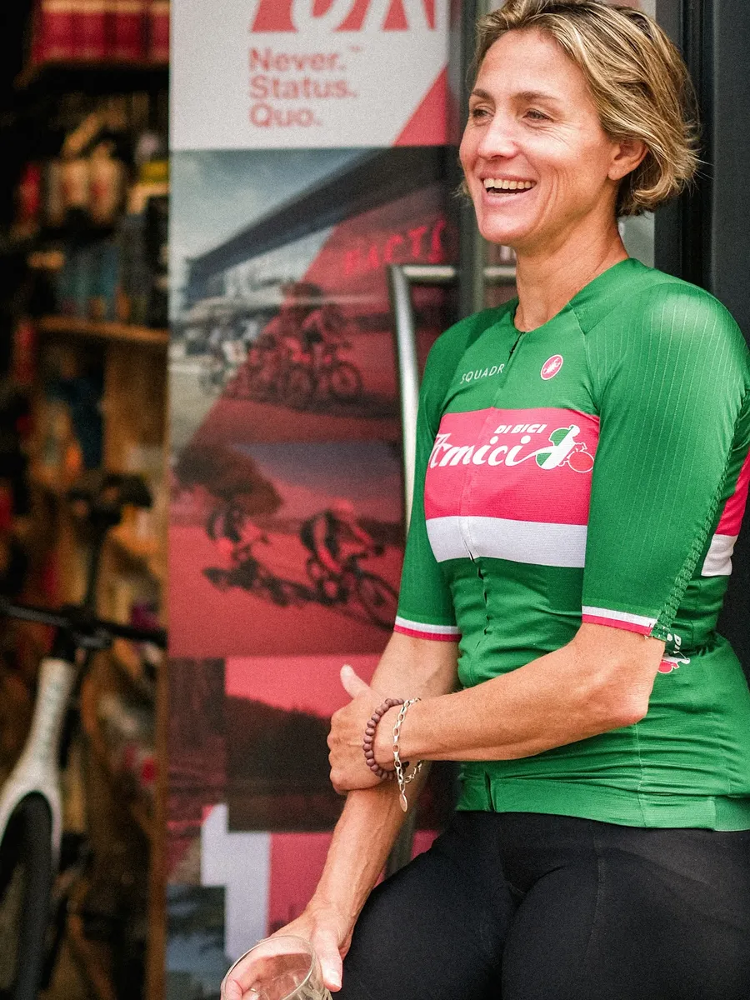
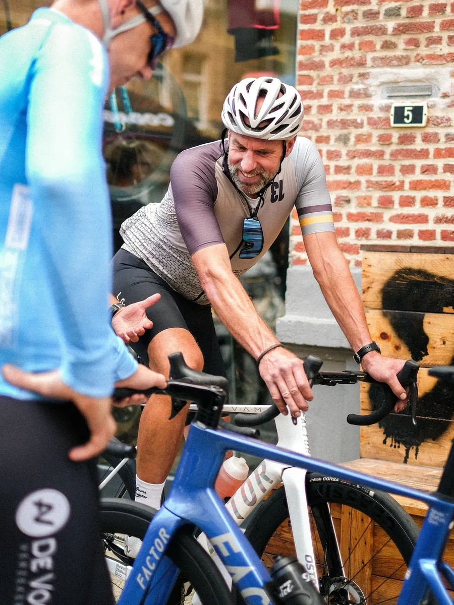
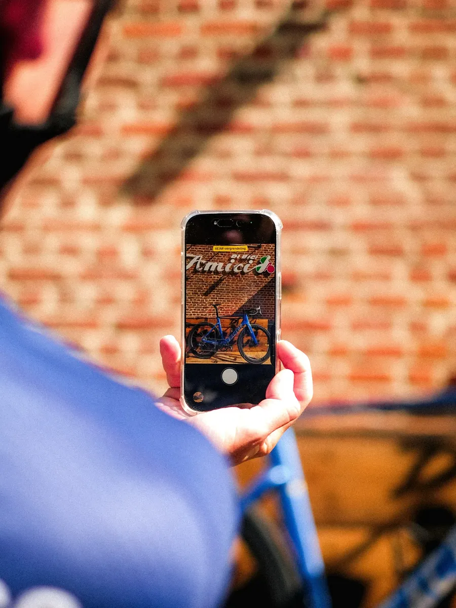
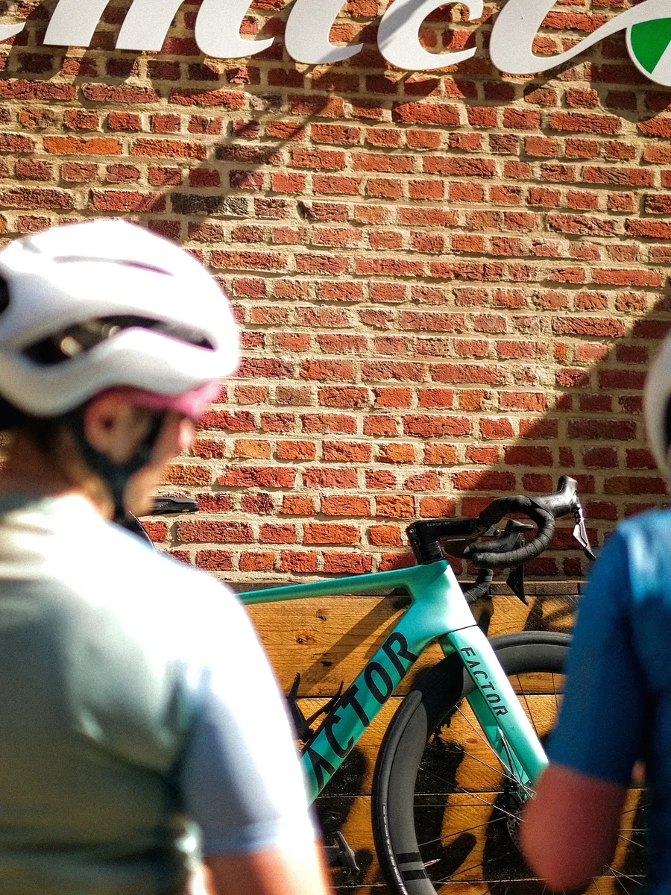
What we call a social ride: samen op pad, met klanten die vrienden werden.
Nieuwe fietsen eerst zelf rijden. Bij de Factor-dag genoten wij minstens even hard.
Dertig singles, één rit. Vive le vélo, vive l'amour.
Onze eigen club. Vraag in de winkel hoe je mee kan rijden.
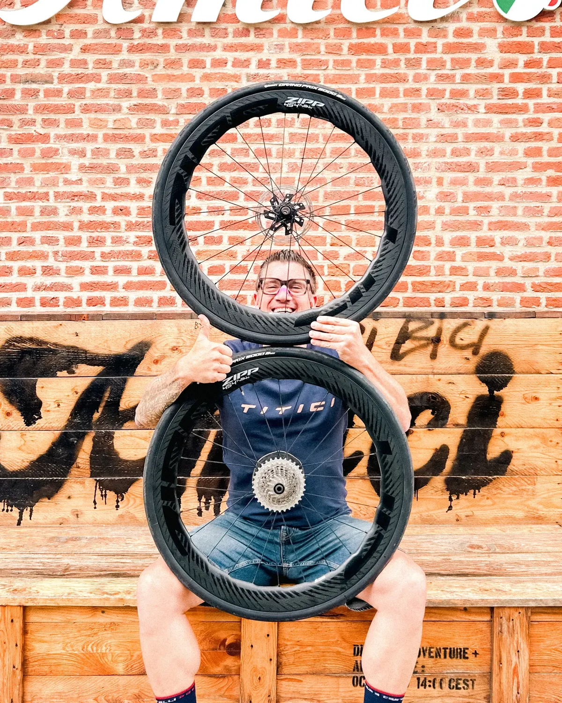
“Een fietswinkel uitbaten was mijn kinderdroom.”
En zo geschiedde. Wij zijn Jef en Sofie, zaakvoerders en bezielers van Amici di Bici. Acht jaar geleden begonnen we, intussen in een échte werkruimte op 't Zuid.
Moest je het ons vragen, dan werken we eigenlijk geen enkele dag in ons leven. Behalve als de administratie erbij komt kijken.
“Ik heb super snelle hulp gekregen in een noodsituatie. Ze hebben mijn fiets gerepareerd binnen de 5 minuten ook al was het enorm druk. Echt een sterke aanrader.”
“Een fietswinkel in hartje Antwerpen met alleen maar topmateriaal! Fantastische mensen met een hart voor hun vak én hun klanten.”
“Over een top fietsenwinkel gesproken! We waren al meerdere winkels gepasseerd, maar vonden er niets of er was weinig tot geen keuze voor kleine maatjes.”
“Tijdens mijn bezoek aan Amici Cycling in Antwerpen werd ik meteen vriendelijk geholpen.”
Riemstraat 5, op 't Zuid. Onderhoud zonder afspraak, voor een bikefit of advies over een nieuwe fiets bel je best even op voorhand.
| Ma tot wo | Gesloten |
| Donderdag | 12u tot 20u |
| Vrijdag | 12u tot 18u |
| Zaterdag | 9u30 tot 17u30 |
| Zondag | Gesloten |
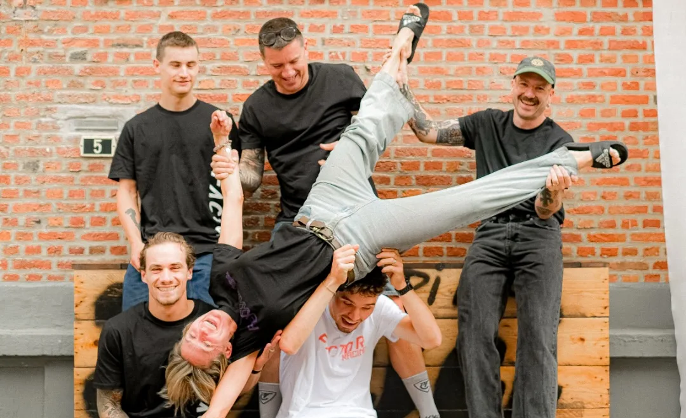
Ik maakte deze demo voor jullie om te tonen wat er kan. Na een kort gesprek maak ik er iets veel persoonlijkers van, helemaal naar jullie wens.
Vrijblijvend. Ik kom langs of we bellen.
Op maat, op jullie eigen domein.
Geen voorschot. Jullie betalen pas als alles klaar is.
Hosting, domeinnaam en kleine wijzigingen, zoals nieuwe openingsuren.
Omdat een voorbeeld meer zegt dan een mail. Zo zien jullie meteen wat er kan, en het kost jullie niets.
Nee. Het gesprek is vrijblijvend. Vinden jullie het niks, dan is het daarmee gedaan.
Na ons gesprek staat jullie site binnen 10 tot 14 dagen online.
Zeker. Jullie domeinnaam kan gewoon blijven, de nieuwe site komt in de plaats van de oude.
Nee, dat doe ik op basis van ons gesprek. Eigen foto's zijn mooi meegenomen, maar niet nodig om te starten.